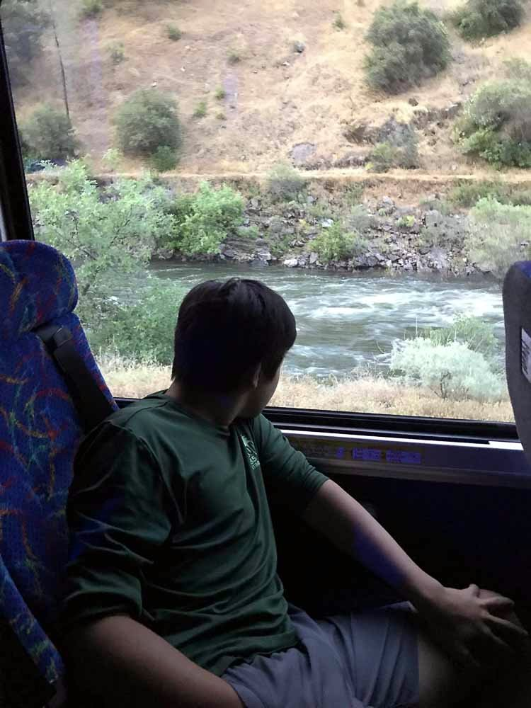
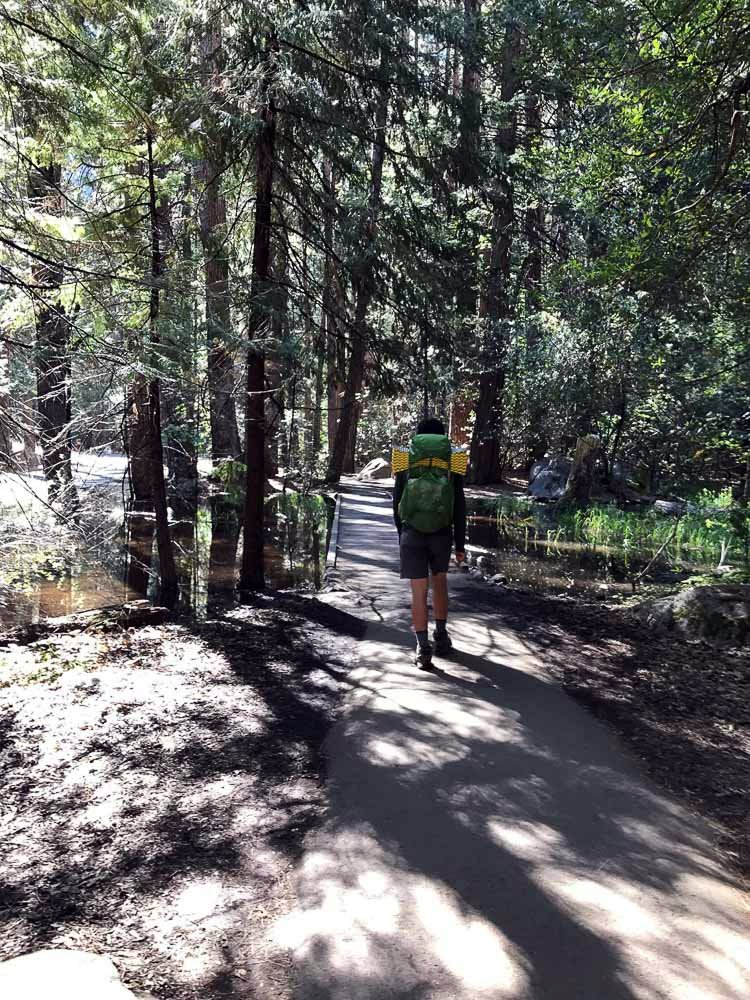
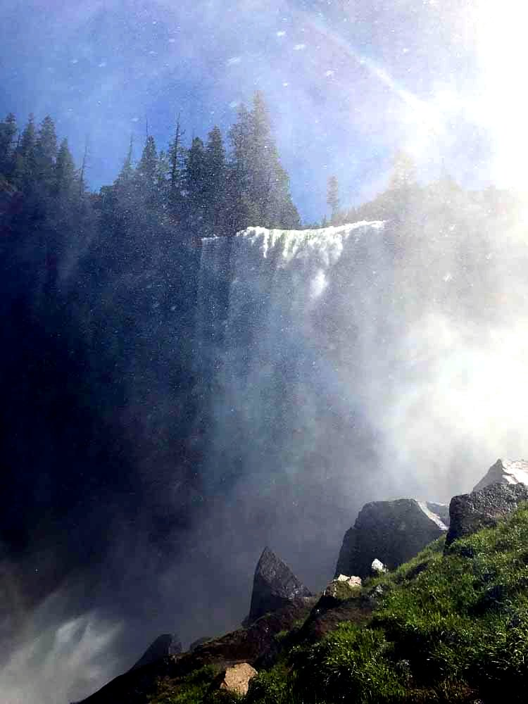
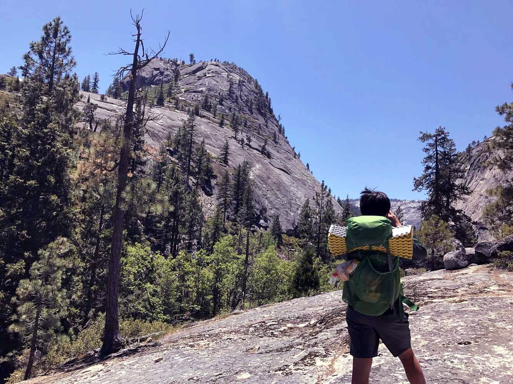
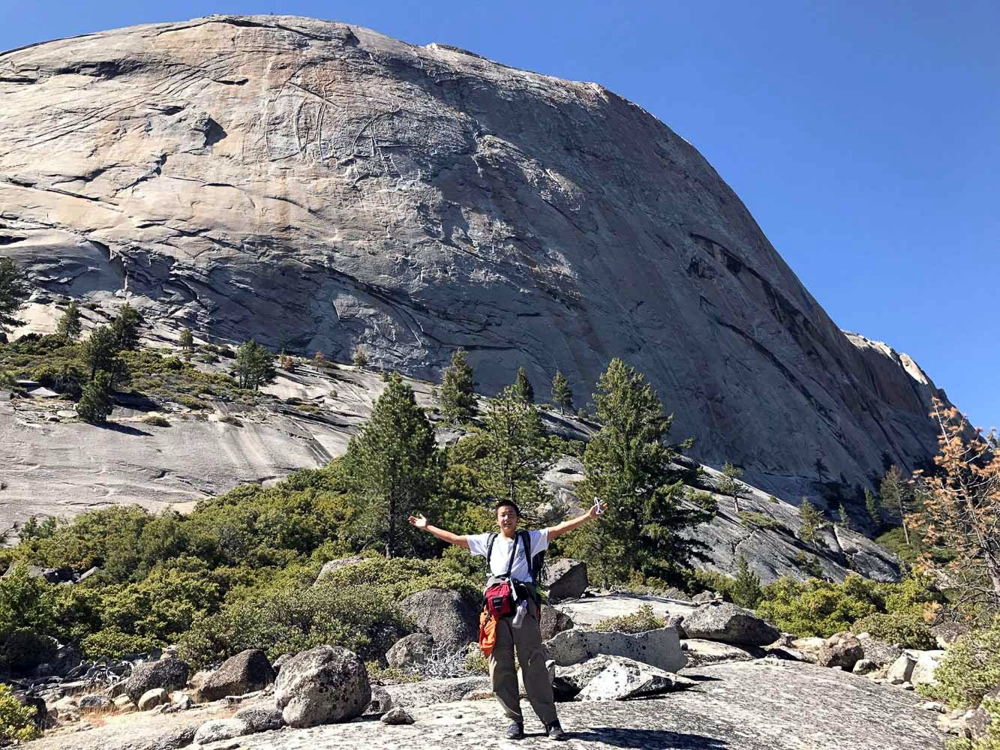
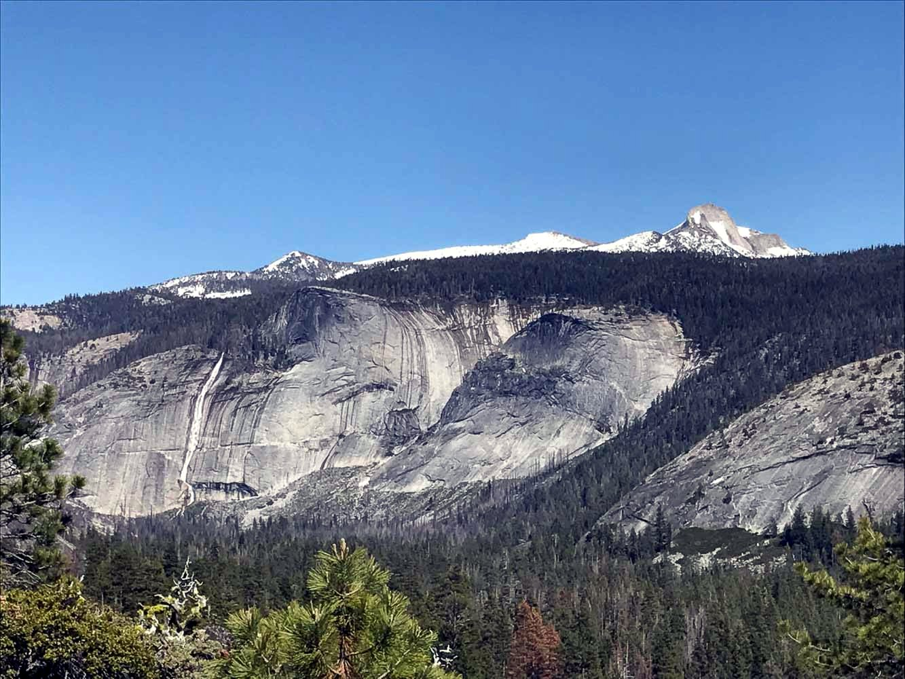
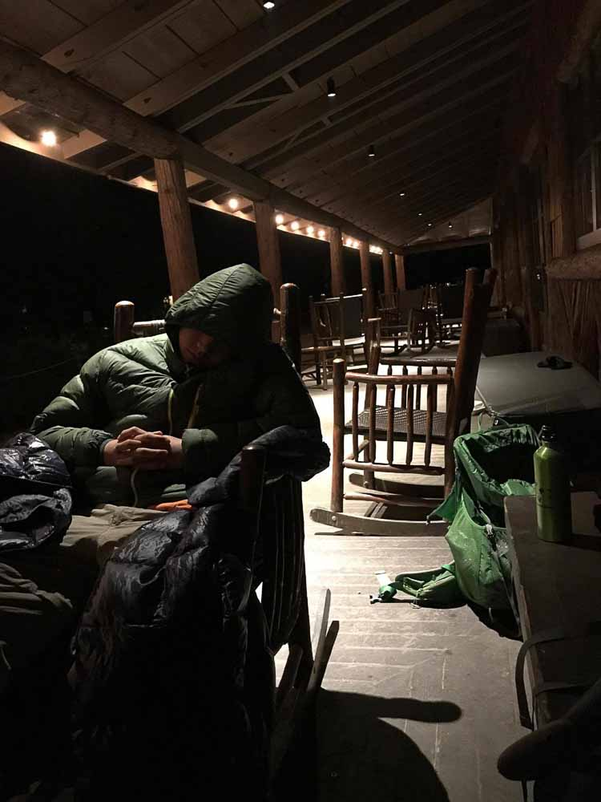

Yosemite Valley - June 2017
This was my first trip without any adults, just me and Jeffery. I think I was 14 at the time.
We took the bus from San Jose Diridon Station to the Merced Transpo, then took the YARTS to Curry village.

{kind=link}
We got there at sunset, obviously meant finding a real campsite would be impossible. We camped in a small clearing by the Merced River, fairly close to Curry village (not legal but ok).

{kind=link}
Merced in full flow
The next morning we began our hike to the Diving board (the place on the south side of Half Dome where Ansel Adams took his famous "Monolith" photograph).


{kind=link}


{kind=link}
Vernal Falls
{kind=link}


{kind=link}
{kind=link}
Past the Mist trail, we took the John Muir trail up to just before Little Yosemite Valley, where there is a not-obvious turn off that breaks off from the main trail, leading towards Lost Lake and the Diving board. From there, a lot of cairns mark the route towards the Diving Board. We lost the route just below the east face of Half Dome, and we decided it wouldn't be smart to keep going. We didn't have enough water, and we really didn't know where we were.

{kind=link}
Liberty Cap

Lost

{kind=link}

{kind=link}
Mt. Clark
Had a really bad sleep that night, camped on this ledge right above the John Muir trail so the ranger folk wouldn't see us. We hiked out via the John Muir trail instead of the Mist trail, and it was really nice.

{kind=link}
That afternoon we were really not in the mood of hiking any more, so we just hung out inside the Curry Village lounge. We got wifi access from a very kind gentleman. We didn't feel like setting up our tents, so we slept outside the lounge after they kicked us out at 11pm.

{kind=link}
Our laziness continued on to the next day:

Finally the bus came and we just went home.
{kind=link}

I felt so American watching this sunset from the back of a Greyhound bus